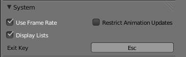

System¶
The System tab at the 渲染 tab of the Properties editor, let the game developer specify options about the system performance regarding to frame discards and restrictions about frame renderings, the key to stop the Blender 游戏引擎, and whether to maintain geometry in the internal memory of the Graphic card.
Options¶

System panel in the 渲染 tab.
- Use Frame Rate
- When checked, this will inform Blender whether to run freely without frame rate restrictions or not. The frame rate is specified at the Display panel in the 渲染 tab of the Properties editor. For more information about frame rates, see the Display page.
- Display Lists
- When checked, this will tell Blender to maintain the lists of the meshes geometry allocated at the GPU memory. This can help to speed up viewport rendering during the game if you have enough GPU memory to allocate geometry and textures.
- Restrict 动画 Updates
- When checked, this will force Blender game engine to discard frames (even at the middle of redrawing, sometimes causing tearing artifacts) if the rate of frame rendered by the GPU is greater than the specified at the Display Tab.
- Exit Key
- Clicking at this button will ask the user to type a key to specify a key to stop the game engine from running.